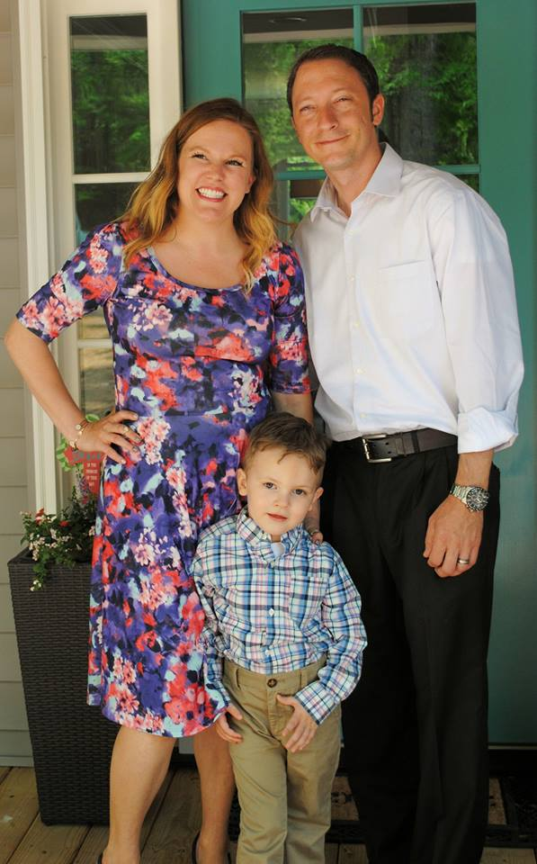

About Me

Pleased to meet you. My name is Daniel Orlovsky, and I am a full-stack developer. I live with my beautiful wife Jessica and my only child Lucas (who's simply adorable) in Charlotte, NC. Here is my home on the web to detail my wonderful (and sometimes chaotic) journey into the world of application-development.
I use a combination of C#, ASP.NET (MVC or WebForms), Html5, and CSS3 to deliver feature-rich custom content management systems to each and every one of my clients.
When I'm not steadily working for a client I like to take some time out and study game-programming architecture using various frameworks such as MonoGame and Direct X, or with development tools like Unity.
I am currently expanding my skillset to include Javascript, where I will be focusing on technologies such as jQuery, NodeJs, ReactJs, Express Framework, and Express Handlebars view-engine.